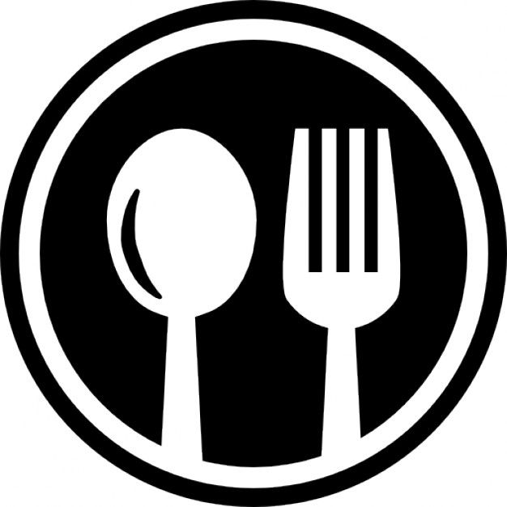

<ion-header [translucent]="true">
  <ion-toolbar>
    <ion-buttons slot="start">
      <ion-menu-button color="primary" menu="first"></ion-menu-button>
    </ion-buttons>
    <ion-title>
      Micro Al Parque
    </ion-title>
    <ion-buttons slot="end">
      <ion-button class="bordered" fill="solid" color="light">
        <ion-icon name="notifications-outline"></ion-icon>
      </ion-button>
    </ion-buttons>

  </ion-toolbar>
</ion-header>

<ion-content [fullscreen]="true">
  <ion-card-content>
    <ion-item>
      <ion-label>DDD. MMM DD, YY (custom locale)</ion-label>
      <ion-datetime [value]="fecha.toISOString()"
        [dayShortNames]=""
        displayFormat="DDD. MMM DD, YY"
        monthShortNames="jan, feb, mar, apr, mai, jun, jul, aug, sep, oct, nov, des"></ion-datetime>
    </ion-item>
    <ion-card>
      <ion-label>Higuine De Los Utensilios de Cocina</ion-label>
      
      <ion-label> Los utensilios de cocina hay que lavarlos con agua y jabón después de usarlos.</ion-label>
    </ion-card>
  </ion-card-content>
</ion-content>
